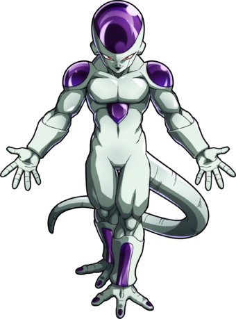
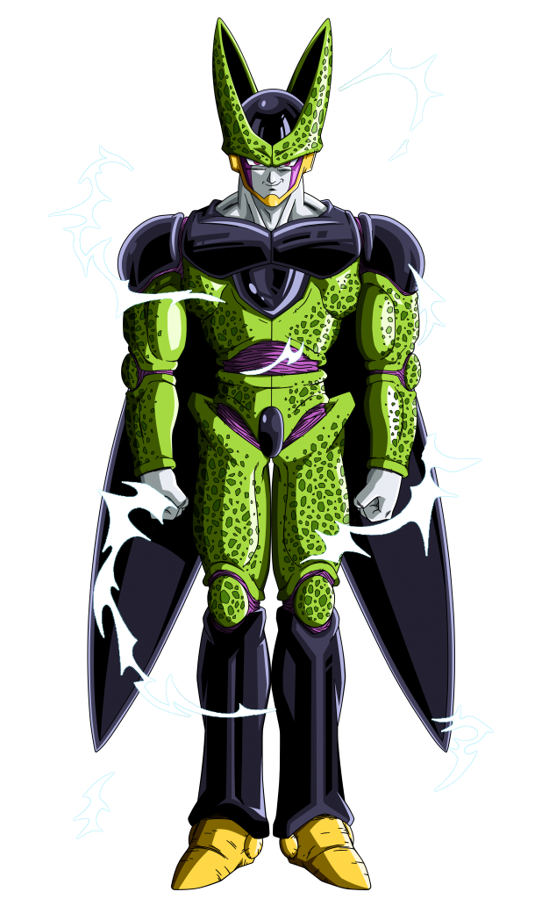
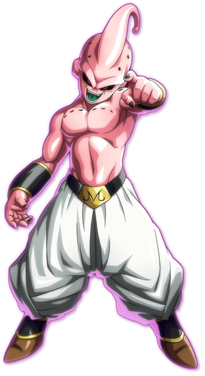

|  |
Freezer
|
| Freezer es conocido por ser el emperador del universo, gran parte de su fama la debe a la
gran conquista de planetas por parte de su ejercito, él mismo destruyó el planeta de los
saiyan sin apenas esfuerzo, se le conoce por ser alguien despiadado y cruel. Tiene un
inmenso nivel de poder a pesar de que nuca ha entrenado, lo debe a que es un caso
extraordinario dentro de su raza, de la cual se desconoze totalmente su procedencia que
puede ir desatando en sus distintas transformaciones(La mostrada es la definitiva) |
|  |
Célula
|
| Se trata de un bioandroide creado por el Dr. Gero con la intención de vengarse de Goku por
haber acabado con el Ejército Red Ribbon. Está fabricado a partir de células de Goku,
Piccolo, Vegeta, Freezer, a raíz de lo cual tiene todas sus características biológicas
útiles (como regenerarse y elevar su poder tras estar al borde de la muerte) y una
computadora, mediante una pequeña cámara, registró los movimientos y técnicas de estos
luchadores haciendo que Cell sepa usar todos sus ataques. Cell puede absorber la energía de
sus enemigos con la aguja al final de la cola, y para alcanzar la perfección de su cuerpo,
debe absorber a los androides #17 y #18, Cell en forma tiene un físico perfecto tal y como
es su altura y una voz muy ronca y aterradora |
|  |
Majin buu
|
| Majin Buu es el último enemigo que aparece en Dragon ball Z, el mago Babidi lo despierta
(puesto que piensa dominar el mundo a través de sus grandes poderes) con una gran suma de
energia para hacerlo liberar de un huevo,tiene la gran habilidad de regenerar su cuerpo
siempre y cuando quede alguna célula de su organismo, tambíen puede absorber a otras
personas y obtener el poder de estas convirtiendolas en comida o simplemente atrapandolas
con restos de su cuerpo. |
| |